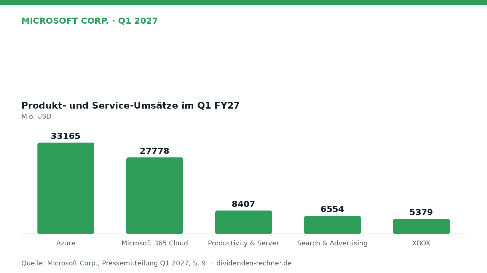

Quartalszahlen

Microsoft steigert Umsatz im ersten Quartal auf 92,3 Milliarden US-Dollar
Microsoft wächst im Auftaktquartal 2027 deutlich beim Umsatz und Gewinn, angetrieben von starken Cloud-Erlösen und Azure.

Kurz gesagt
Umsatz: 92.279 Mio. USD (19 %)
Gewinn: 36.629 Mio. USD (32 %)
- Umsatzplus: Der Konzern wächst zweistellig dank florierender Cloud-Sparte.
- Treiber: Vor allem Azure und Microsoft Cloud legen massiv zu.
- Belastung: Höhere Investitionen in KI-Infrastruktur belasten den Cashflow.
Microsoft startet mit 19 Prozent Umsatzplus ins Fiskaljahr 2027
Microsoft ist mit einem kräftigen Umsatz- und Gewinnwachstum in das Fiskaljahr 2027 gestartet. Im ersten Quartal bis zum 30. September 2026 kletterte der Konzernumsatz auf 92.279 Mio. USD, was einem Plus von 19 % gegenüber dem Vorjahreszeitraum entspricht.

Eigene Darstellung nach Daten aus: Microsoft Corp., Quartalszahlen Q1 2027 vom 2026-10-28 · Original.Starkes Cloud-Wachstum und Azure als Motor
Das Geschäft wird weiterhin vom Cloud-Bereich getragen. Die Erlöse der Microsoft Cloud kletterten um 30 % auf 63.900 Mio. USD. Allein das Cloud-Rechenzentrum Azure legte um 48 % zu. Konzernchef Satya Nadella betonte die hohe Nachfrage nach künstlicher Intelligenz und eigener Unternehmensintelligenz.
„Wir liefern größere Fähigkeiten, Auswahl, Kontrolle und Kosteneffizienz für Kunden über unseren gesamten Stack.“
— Satya Nadella, Vorstandschef (aus dem Englischen übersetzt)
Das operative Ergebnis stieg auf 45.915 Mio. USD, ein Zuwachs von 21 %. Demgegenüber steht allerdings ein anhaltender Margendruck durch stark steigende Ausgaben für Rechenzentren und KI-Infrastruktur.
Dividende und solider Cashflow
Für Anleger bleibt die Dividende eine verlässliche Einnahmequelle. Die aktuelle Jahresdividende ist auf 4,90 USD je Aktie hochgerechnet, bei einer Ausschüttungsquote von 26 % auf Basis des Gewinns der letzten vier Quartale. Der Free Cashflow der vergangenen vier Quartale summierte sich auf 59.957 Mio. USD, wovon 45 % für Dividendenzahlungen aufgewendet wurden. Microsoft hat die Dividende in den vergangenen 20 Jahren in Folge erhöht.
Steigende Investitionen belasten die Bilanz
Der Blick auf die langfristige Entwicklung zeigt jedoch stark steigende Investitionen (Capex). Während die Investitionen im Geschäftsjahr 2022 noch bei 23,9 Mrd. USD lagen, kletterten sie im Geschäftsjahr 2026 auf 115,9 Mrd. USD. Die Nettoverschuldung erhöhte sich im selben Zeitraum von 64,5 Mrd. USD auf 107,9 Mrd. USD zum Ende des Geschäftsjahres 2026. Das Verhältnis von Nettoverschuldung zum EBITDA blieb mit 0,5 im stabilen Bereich.
Bewertung und Ausblick
Mit einem Aktienkurs von 531,01 USD ergibt sich ein KGV von 27,7 und eine Dividendenrendite von 0,9 %. Für die kommenden Quartale rechnet das Management mit anhaltenden Ausgaben für die KI-Infrastruktur. Als Risiken bleiben der scharfe Wettbewerb im Cloud-Segment sowie mögliche regulatorische Hürden bei KI-Anwendungen.
Dividendenkennzahlen im Überblick (eigene Berechnung)
| Kennzahl | Wert | Rechenweg |
|---|---|---|
| Dividendenrendite | 0,9 % | 4,90 USD ÷ Kurs 531,01 USD |
| Ausschüttungsquote (Ergebnis je Aktie) | 26 % | 4,90 USD ÷ 19,15 USD (4 Quartale) |
| KGV | 27,7 | Kurs ÷ 19,15 USD |
| Dividenden / Free Cashflow (12 Monate) | 45 % | 27.033 ÷ 59.957 Mio. USD |
| Free Cashflow, Geschäftsjahre (Mrd. USD) | 2022: 65,1; 2023: 59,5; 2024: 74,1; 2025: 71,6; 2026: 67,0 | Kapitalflussrechnung laut FMP |
| Nettoverschuldung / EBITDA, Jahresende | 2022: 0,6; 2023: 0,4; 2024: 0,6; 2025: 0,5; 2026: 0,5 | Bilanz und Gewinn- und Verlustrechnung laut FMP |
| Dividendenerhöhungen in Folge | 20 Jahre | Kalenderjahressummen bis 2025 |
| Dividendenwachstum 2020–2025 | 10,2 % p. a. | Kalenderjahressummen |
Quelle: Microsoft Corp., Quartalszahlen Q1 2027 vom 2026-10-28; Kurs- und Dividendendaten: Financial Modeling Prep. Rechenwege eigene Berechnung. Keine Anlageberatung.
Hinweis: Dieser Text dient der allgemeinen Information und ist weder Anlage-, Steuer- noch Rechtsberatung. Kapitalanlagen sind mit Risiken verbunden, bis hin zum Totalverlust.